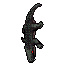
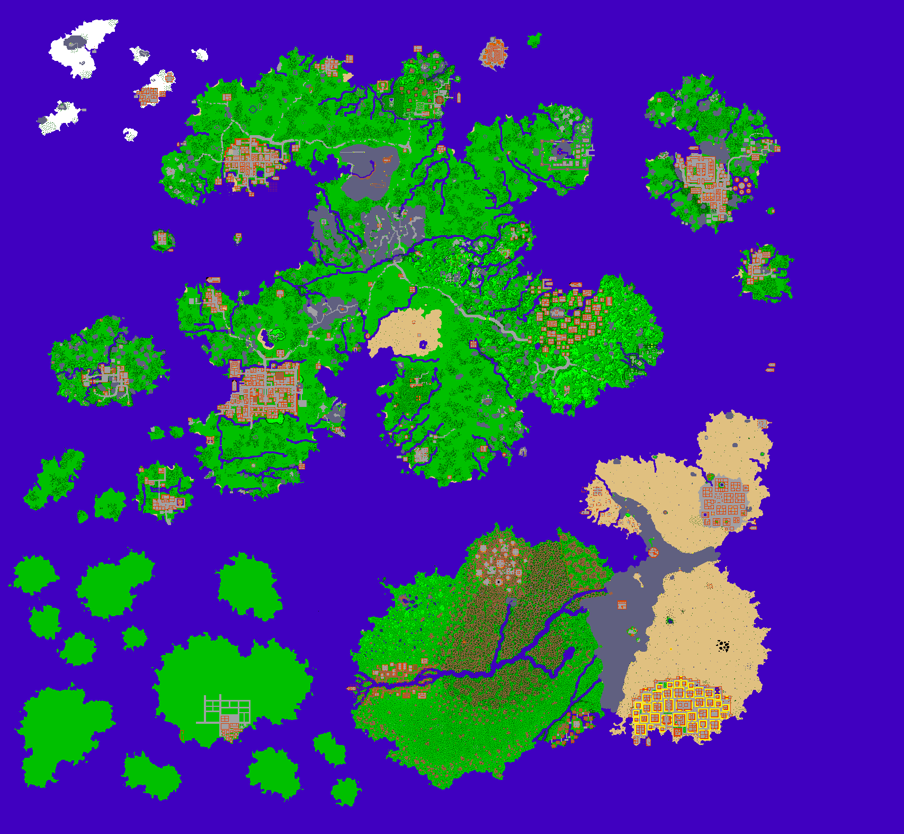

Bonebeast

aqui em baixo temos o mapa do Tibia

Tibia é um RPG online para PC que aposta na simplicidade. Por ser um dos mais antigos do gênero, ele também se
mantém
um dos mais tradicionais, com gráficos extremamente simplistas e alto desafio, além de uma boa
comunidade que está sempre presente em massa nos servidores do jogo.
Mestre de combate corpo a corpo, possuindo resistência imensa.
Mestre de luta à distância, domínio leve da artes mágicas.
Mestre da arte da cura e suporte.
Mestre das artes mágicas, agressivas e ofensivas.